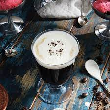

Lasagna recipe

Great alcoholic coffee drink for cold nights.
The best coffee in the world!
Ingredients
- 1 ½ teaspoons superfine sugar
- 1 fluid ounce 151-proof rum
- ¾ fluid ounce triple sec (such as Bols®)
- 2 ½ fluid ounces coffee-flavored liqueur (such as Kahlua®)
- ½ cup freshly brewed coffee
Steps
- Pour sugar into a shallow dish. Wet the rim of the glass and dip in sugar to coat. Add rum and triple sec. Use a long match or lighter to carefully ignite the mixture. Turn glass slowly until sugar begins to caramelize. Pour in coffee liqueur to put out the flame. Top with hot coffee.